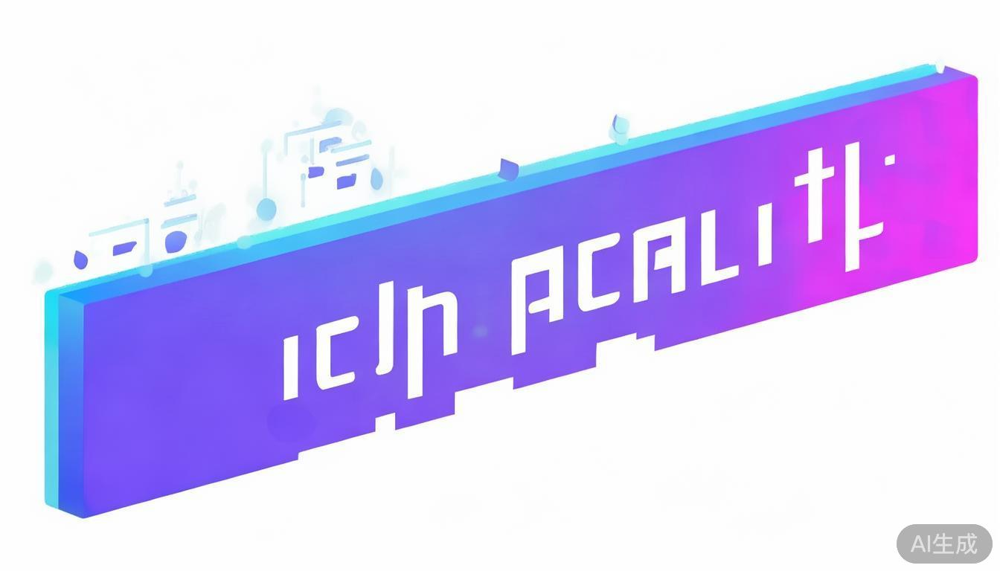

PodcastScript 播客脚本工
22 号毕业设计：PodcastScript 播客脚本工
本项目解决播客创作者选题空泛、提纲逻辑散、口播稿口语化不足、金句产出难的全流程痛点，学完可掌握大模型结构化提示词工程、多步骤内容生成链路设计、轻量Web应用搭建能力，独立完成可直接落地的AI内容工具。
项目简介
《PodcastScript 播客脚本工》是面向中文播客创作者的全流程AI脚本生成工具，覆盖从选题策划到成稿输出的完整创作链路，无需创作者在多个文档、AI对话窗口间反复切换。工具默认适配单人口播、双人对谈两种主流播客形态，输出内容严格匹配播客“口语化、有节奏、带记忆点”的内容要求，支持15-60分钟时长的脚本定制，可直接用于录制参考。项目采用前后端分离的轻量架构，所有生成逻辑可本地调试，无平台锁定，适合作为AI内容创作方向的入门级毕业设计。
功能特性

- 智能选题生成：基于用户输入的领域关键词，结合近期热点、受众痛点生成10个差异化播客选题，每个选题附目标受众、核心冲突、预期时长标签
- 结构化提纲生成：选定选题后自动生成三层逻辑提纲，包含开场hook、核心章节（每章配案例/互动设计）、结尾升华模块，支持手动调整章节权重
- 口语化口播稿生成：基于提纲生成带语气标注、停顿提示的口播稿，自动规避书面化表达，双人对谈模式下自动区分主播/嘉宾话术风格
- 金句自动提炼：从成稿中提取3-5句适合传播的短金句，适配小红书、朋友圈、播客shownotes等多场景传播需求
- 多格式导出：支持将完整脚本导出为Markdown、PDF、飞书文档格式，自动生成对应播客的shownotes文案与时间轴标签
- 风格定制：支持上传3-5期创作者过往播客文稿，自动匹配创作者的说话风格、常用梗，避免生成内容的“AI感”
技术架构
| 组件 | 技术选型 | 作用 |
|---|---|---|
| 后端框架 | FastAPI 0.104.1 | 提供RESTful API接口，处理生成请求、参数校验、任务调度 |
| 大模型调用 | OpenAI SDK 1.3.7 / 通义千问API | 核心内容生成引擎，支持多模型切换 |
| 提示词管理 | Jinja2 3.1.2 | 管理各环节结构化提示词模板，支持动态参数注入 |
| 前端框架 | Streamlit 1.28.2 | 快速搭建可视化交互界面，无需单独写前端代码 |
| 文档导出 | Python-Markdown 3.5.1 + WeasyPrint 60.2 | 实现Markdown转PDF、格式标准化处理 |
| 风格匹配 | LangChain 0.0.335 | 处理上传的历史文稿，做向量检索与风格Few-shot注入 |
架构说明：整体采用流水线式生成链路，用户输入参数后，后端按“选题提纲口播稿金句导出”的顺序串行调用大模型，每个环节的输出自动作为下一个环节的输入，同时支持用户在任意环节修改内容后重新生成后续模块。提示词模板统一存放在templates目录下，可单独迭代优化生成效果，无需修改业务代码；风格匹配模块为可选增强模块，用户上传历史文稿后自动构建临时向量库，在生成环节注入相似片段作为参考，不影响基础功能的运行速度。
核心代码骨架
# main.py 后端核心生成链路
from fastapi import FastAPI
from langchain.prompts import Jinja2PromptTemplate
from openai import OpenAI
import os
app = FastAPI(title="PodcastScript 播客脚本工")
client = OpenAI(api_key=os.getenv("OPENAI_API_KEY"), base_url=os.getenv("OPENAI_BASE_URL"))
def llm_generate(template_path: str, params: dict) -> str:
"""通用大模型调用函数：加载对应环节的提示词模板，注入参数后调用大模型返回结果"""
with open(f"templates/{template_path}", "r", encoding="utf-8") as f:
template = Jinja2PromptTemplate.from_template(f.read())
prompt = template.format(**params)
resp = client.chat.completions.create(
model="gpt-3.5-turbo-1106",
messages=[{"role":"user","content":prompt}],
temperature=0.7,
response_format={"type": "json_object"} # 强制结构化输出，方便前端解析
)
return resp.choices[0].message.content
@app.post("/api/generate/full_script")
def generate_full_script(domain: str, duration: int, style: str = "casual"):
"""全流程脚本生成接口：按流水线依次调用各环节生成函数"""
# 1. 生成选题
topics = llm_generate("topic_gen.j2", {"domain":domain, "count":10})
selected_topic = eval(topics)["topics"][0] # 默认取第一个选题，支持前端切换
# 2. 生成提纲
outline = llm_generate("outline_gen.j2", {"topic":selected_topic, "duration":duration})
# 3. 生成口播稿
script = llm_generate("script_gen.j2", {"outline":outline, "style":style, "duration":duration})
# 4. 提炼金句
quotes = llm_generate("quote_gen.j2", {"script":script, "count":5})
return {"topic":selected_topic, "outline":eval(outline), "script":eval(script), "quotes":eval(quotes)}# app.py 前端交互入口（Streamlit实现）
import streamlit as st
import requests
from export import export_to_markdown
st.set_page_config(page_title="PodcastScript 播客脚本工", page_icon="")
st.title(" PodcastScript 播客脚本工")
# 侧边栏参数配置
with st.sidebar:
domain = st.text_input("播客领域", placeholder="例如：AI职场、独立开发、悬疑故事")
duration = st.slider("单期时长（分钟）", 15, 90, 30)
style = st.selectbox("播客风格", ["轻松闲聊", "深度干货", "故事叙事"])
gen_btn = st.button("生成完整脚本", type="primary")
if gen_btn and domain:
with st.spinner("正在生成脚本，预计耗时30秒..."):
resp = requests.post("http://localhost:8000/api/generate/full_script",
json={"domain":domain, "duration":duration, "style":style}).json()
# 分模块展示结果
st.subheader(f"本期选题：{resp['topic']['title']}")
st.caption(f"受众：{resp['topic']['audience']} | 核心冲突：{resp['topic']['conflict']}")
st.subheader("节目提纲")
st.json(resp["outline"])
st.subheader("完整口播稿")
st.write(resp["script"]["content"])
st.subheader("传播金句")
st.write("\n".join([f"- {q}" for q in resp["quotes"]["quotes"]]))
# 导出按钮
st.download_button("导出Markdown脚本", export_to_markdown(resp), file_name="podcast_script.md")运行步骤
- 环境准备：本地安装Python 3.10+版本，创建虚拟环境并激活，执行
pip install fastapi uvicorn streamlit openai langchain jinja2 python-markdown weasyprint python-multipart安装所有依赖库。 - 配置环境变量：在项目根目录创建.env文件，写入
OPENAI_API_KEY=你的API密钥、OPENAI_BASE_URL=https://api.openai.com/v1（若用国内模型替换为对应端点）。 - 创建提示词模板目录：在根目录新建templates文件夹，分别创建topic_gen.j2、outline_gen.j2、script_gen.j2、quote_gen.j2四个模板文件，写入对应环节的结构化提示词（要求输出JSON格式）。
- 启动后端服务：在项目根目录执行
uvicorn main:app --host 0.0.0.0 --port 8000，启动后访问http://localhost:8000/docs 可查看自动生成的API文档，测试接口连通性。 - 启动前端界面：新开一个终端窗口，在项目根目录执行
streamlit run app.py --server.port 8501，浏览器会自动打开http://localhost:8501 的交互界面。 - 功能测试：在侧边栏输入领域关键词（例如“AI工具创业”），选择时长和风格后点击生成按钮，等待30秒左右即可看到完整脚本结果，测试导出功能是否正常。
- 可选配置：若需要风格定制功能，在项目根目录新建reference文件夹，放入3-5篇往期播客文稿的txt文件，在代码中加入LangChain向量检索逻辑即可启用。
扩展思路
- 多模态增强：接入TTS接口（如豆包语音、ElevenLabs），生成脚本后自动生成样音片段，支持创作者提前试听节奏、调整话术长度。
- 协作功能：接入飞书/企业微信API，支持生成的脚本直接共享给团队成员，添加评论、批注修改功能，适配小团队播客制作流程。
- 热点联动：接入微博热搜、知乎热榜、小红书热点API，每周自动更新领域热点选题库，无需创作者手动找选题方向。
- 数据反馈闭环：接入小宇宙、喜马拉雅等播客平台的播放数据接口，分析高完播率、高互动率脚本的结构特征，自动优化提示词模板的生成逻辑。
小结与练习
核心收获
- 掌握结构化提示词的设计方法：学会用Jinja2模板管理多环节提示词，通过强制JSON输出解决大模型返回结果格式不稳定的问题，实现可复用的生成链路。
- 理解AI内容工具的产品逻辑：掌握“流水线式生成+人工介入点”的产品设计思路，避免追求一步到位生成完美内容，而是在每个环节给用户留调整空间。
- 掌握轻量AI应用的快速搭建方法：学会用FastAPI+Streamlit的组合，在200行代码内实现可用的AI工具原型，无需复杂的前端工程配置。
动手练习
- 补充提纲生成环节的提示词模板，要求提纲必须包含至少1个互动设计（例如提问听众、念评论环节）、2个真实案例占位符，生成后在前端展示可编辑的提纲模块。
- 给口播稿生成功能增加“敏感词检测”模块，调用本地敏感词库对生成的脚本做校验，标记出可能违规的内容并给出替换建议。
本项目为本站 AI 学院「毕业设计」板块原创教学项目，由 AI 生成原型并整理，以官方文档与真实开源生态为准。 技术栈均基于公开、主流的开源库（如 Transformers / LangChain / FastAPI / SQLite 等），可对照各库官方仓库核验。 如引用第三方开源项目，请遵循其原始许可证（MIT / Apache-2.0 / BSD 等）；本项目内容可按 MIT 协议自由使用，标注出处即可。